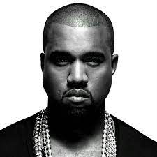
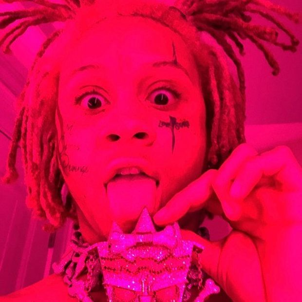

Drake, de son vrai nom Aubrey Drake Graham, né le 24 octobre 1986 à
Toronto, en Ontario,est un rappeur-compositeur et acteur canadien.
Longtemps affilié au label du rappeur Lil Wayne Young Money
Entertainment, il y a signé officiellement en juin 2009. Son premier
album studio, Thank Me Later, sort le 14 juin 2010.
3 derniers Album.
Future, de son vrai nom Nayvadius DeMun Wilburn, né le 20 novembre
19832 à Atlanta, dans l'État de Géorgie, aux États-Unis, est un
rappeur américain . Après la publication de plusieurs mixtapes à
succès variable entre 2010 et 2011, Future signe aux labels Epic
Records et A1 Recordings dirigé par son ami et rappeur Rocko.
3 dernier album.

Ye, de son ancien nom Kanye Omari West /ˈkɑːnjeɪ wɛst/, né le 8 juin
1977 à Atlanta en Géorgie, est un rappeur, compositeur, réalisateur
artistique, réalisateur et designer américain originaire de Chicago
dans l'Illinois.
3 dernier album.
Juice Wrld, stylisé Juice WRLD, de son vrai nom Jarad Anthony
Higgins, né le 2 décembre 1998 à Chicago et mort le 8 décembre 2019
à Oak Lawn, est un rappeur, chanteur, parolier et compositeur
américain.
3 dernier album.

Trippie Redd, de son vrai nom Michael Lamar White II, né le 18 juin
1999 à Canton, dans l'État de l'Ohio, aux États-Unis, est un rappeur
et auteur-compositeur-interprète américain. Il se fait mondialement
connaître en 2017 avec le succès des titres Love Scars, Poles1469 et
Dark Knight Dummo.
3 dernier album.